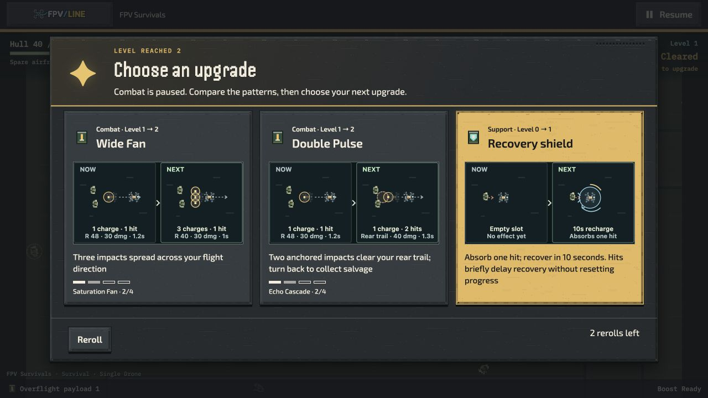
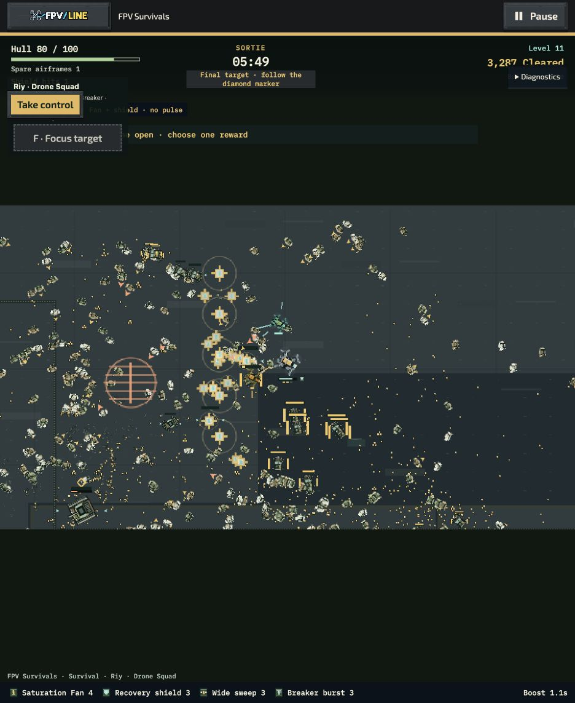
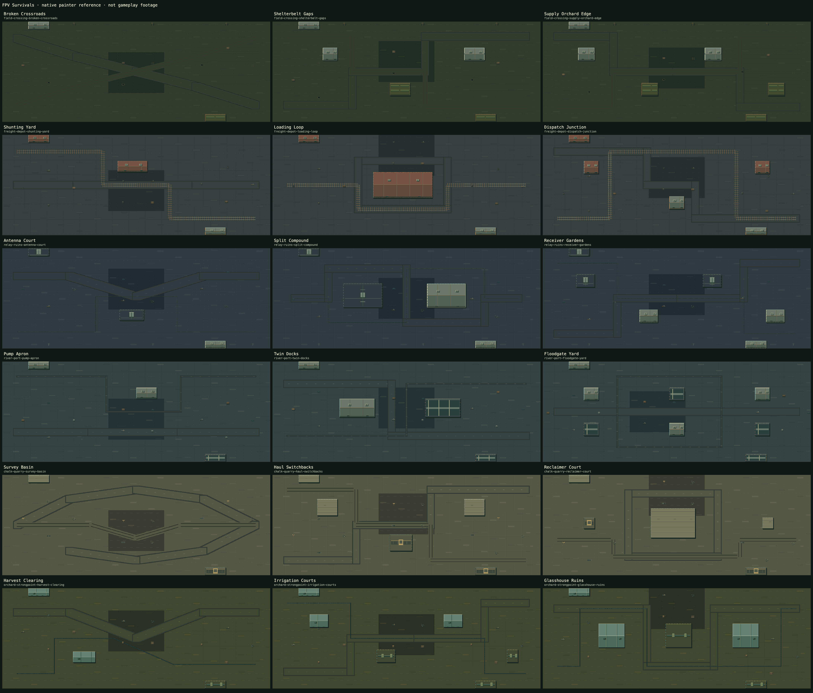

Review the battlefield shapes, different attack patterns and enemy approaches. Single Drone, Riy, Single Raid, Time Attack and Contract Marathon share the same map library.
Maps and movement merged through PR 1215; shared integration, fixes and qualification merged through PR 1226. The final local qualification follow-up is PR 1248. Local reference and three timing trials each for Single Drone, Riy and a controlled Raid workload pass. Three new late Riy trials also pass through tank arrival; broader coverage and gameplay review remain open. Active clips use an automated review pilot; no-input follow-ups are labeled separately. They establish visible behavior, not ordinary-player difficulty.
Video source boundary: these videos and the earlier opening-workload
timing trials precede 07ed46625, which changes later built-in upgrade thresholds and
V4 result saving. They show the recorded artwork and behavior, not qualification of the new
progression. The separately linked late Riy timings use the corrected source
08f5e6e0e. Each capture retains its own source revision.
Native screenshots from runtime 60b0c25ab. Upgrade comparisons reuse the selected drone and enemy art; the HUD identifies collected salvage and the final objective. Corrections and verification limits.


Open courts, connected loops and wide cover routes change approach angles. Scenery uses the runtime painter and shared materials. The overview is a map-art reference; the moving clips below show combat.

Haul Switchbacks, seed 17031991, Single Drone Fan, source 3a1e1f7d9 before
the progression fix. These muted 20-second segments come from one continuous earned run
with the automated pilot. Reduced effects was selected through shared Settings while
paused; normal effects was restored afterward.
The enemy state, positions and Side Burst rank differ. This shows the available effects treatments in native combat; it is not an identical-state visual or performance comparison. Settings and recording hashes.
The same pre-fix Quarry Fan run, around 4:14 on 3a1e1f7d9, with Fan rank 4,
Slow Field rank 3 and Side Burst rank 3. Master sound is enabled and normal effects restored.
The recording is non-silent: measured mean −47.5 dB and peak −29.2 dB. It excludes external soundtrack, HUD and upgrade cards. A Now playing label does not prove recorded music. Warning audibility, reaction repetition and the complete music/effects mix still need listening review; these volume measurements do not establish sound quality.
Haul Switchbacks, Single Drone, seed 17031991, Standard, three airframes and Scout on source
3a1e1f7d9. All three runs earn their upgrades using the same automated tight-route
pilot, without injected checkpoints. Their flight paths and recording start times differ;
these are not synchronized encounters or timing trials. Normal effects, muted audio,
battlefield-only capture.
Compare coverage, route changes and hostile warning visibility. Later outcomes come from native HUD observations and are not necessarily final video frames. These samples do not establish build rankings, ordinary-player difficulty or the sound mix. Settings, start times and recording hashes.
Haul Switchbacks, Single Drone, seed 17031991, normal effects. This 20-second capture starts
around 2:32 on source 4dab801d9, with earned Fan, Slow Field and Side Burst.
The automatic pilot is active. Effects and voices are audible; external soundtrack, HUD and
cards are excluded by the recorder.
No-input follow-up: after Take Control at about 3:01, the reviewer gave no steering, boost or Focus. The run lost at 3:20, after contact consumed its remaining three airframes. Cleared enemies rose from 874 to 1,049. This was observed in the native HUD/results; no follow-up video was saved. It is not a side-by-side recording or proof about every build.
Loading Loop, seed 17031991, source 0b1aa412d. After the third timing trial,
the reviewer pressed Take Control around 2:19 and gave no steering, boost or Focus. The run
started this follow-up with 20 hull and three airframes; all were lost by
2:30, with cleared enemies increasing from 445 to 464.
This is a low-hull follow-up, not a full-health mature-build comparison or proof that every stationary build loses. The outcome was observed through the native HUD/results.
Look for the route each build encourages: broad passes, returning through a rear trail, or controlling nearby crowds while attacking the flanks. Recordings intentionally exclude the menu and HUD; review controls remain visible in the playable versions.
58e223b7d; subsequent movement and recovery fixes are not represented here.
Native effects audio is included; external music is excluded.
3bb1b0dc6, seed 17031991, around 100 seconds into the run. Audio settings
changed during review; this is not a qualified sound-mix sample.
3bb1b0dc6,
seed 17031991, around 132 seconds. Master audio was muted. This automated run later lost
at 5:50 after earning ten choices.
The expanded matrix records 44 repetitive-input defeats, four unavailable checkpoints, two active-pilot wins and ten losses. A later six-run route/Focus comparison adds one Riy Echo completion; its other five runs lose. Early upgrades remain fast, but measured late Echo gaps of 101–115 seconds need review. A wall-held 39.75-second clearing interval also remains a pacing question despite eventual defeat.
Two separate Systems follow-ups change only the one-airframe challenge to the default three airframes and both complete: Survivor at 6:02 and Riy at 5:27. Their first-life timelines match the previous losses exactly. See the controlled comparison; this does not turn the challenge losses into passes.
Three trials each pass for native Single Drone at p95 9.5–10.2 ms, Riy at 9.5–10.5 ms and the controlled Raid workload at 9.6–10.3 ms. Survivor and Riy cover opening-to-elite play with earned upgrades and include draft rendering; Raid uses a sustained 403-actor engineering fixture with 200 visible actors, not an ordinary sortie. The third Survivor trial retains a 123.4 ms foreground stall. The original failed reference trials and failed soak p95 remain preserved. See the timing report and its limits and exact source, viewport and timing windows.
After the progression correction, three separately restarted Riy Fan trials on Receiver
Gardens pass at p95 10.8 / 12.1 / 10.2 ms on 08f5e6e0e.
They measure earned gameplay from about 3:30 to 5:28, including a surge and final-tank
arrival. Eight periodic samples per trial show 139–973 alive and 93–348 center-visible
enemies, with one canvas and stable base atlas storage. These are sampled ranges, not
sustained peaks or a full boss victory. See the late timing
report. One reduced-effects comparison also passes at p95 10.3 ms
and p99 11.3 ms, with no interval above 33.3 ms. At the same 328.2-second
tick its full gameplay summary matches normal trial 2 except appearance. Sampled
populations match; effects peak at 32 versus 60 and sprite allocation at 1,740 versus
1,843. This is one comparison, not three reduced-effects trials. Normal settings were
restored. The quiet reference soak also passes on 08f5e6e0e: 15 measured minutes,
118.8989 FPS, p95 9.7 ms, p99 10.6 ms,
worst 154.6 ms and 0.2373632% of intervals above 33.3 ms. All 62 samples retain one canvas
and fixed atlas storage; there is no dropped time, context loss or raw overflow. Stalls,
including those during disk-pressure cleanup, remain included. The
soak report preserves the original failed attempt too.
The current progression comparison records 47 unattended defeats and one unavailable checkpoint, with two active wins and ten losses. Its separate fixed-route Survivor Echo now wins, while Riy Echo loses and retains a 91.2-second final-choice collection gap. The earlier outcomes above remain historical.
Latest main is merged at 7819c81a0 without changing Overflight runtime;
the recorded measurements retain 08f5e6e0e. All 90 focused integration
tests pass with zero skipped. The planned local checks are complete within
their recorded scope; PR 1248 contains the follow-up. Review judgments include late reward collection, Riy Echo approaches,
challenge readability, visual appeal and real soundtrack/warning balance. The recorded
scenarios do not certify every build or boss victory. External-device and five-player
trials remain skipped at the user’s direction.